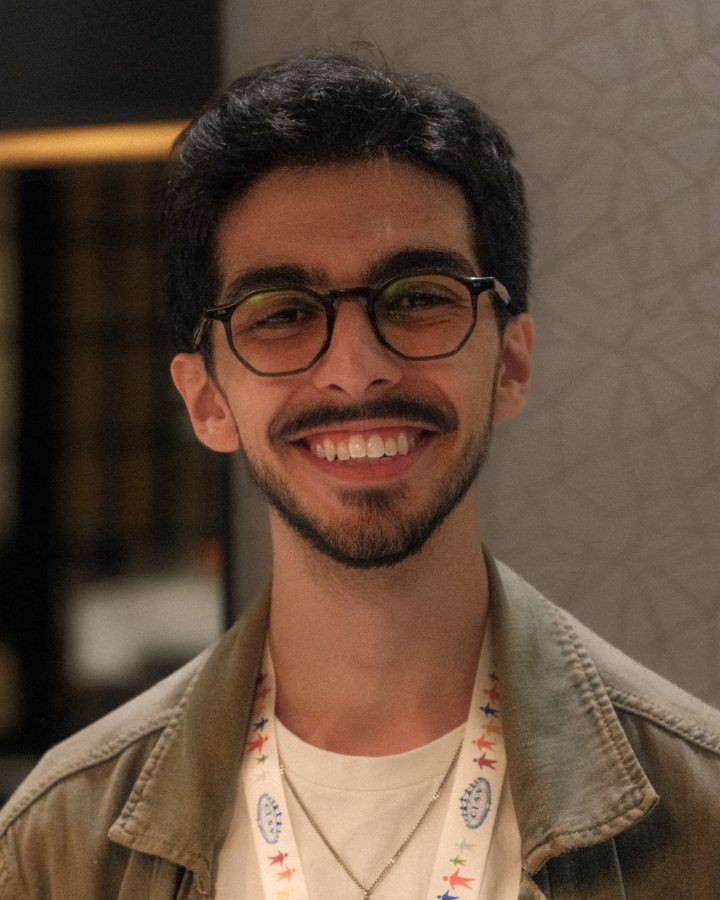

Economics · Training · PhotographyEconomia · Treinamento · Fotografia
Bruno
Bruno
Bensadon
São Paulo, Brazil — FGV School of Economics São Paulo, Brasil — FGV Escola de Economia
An economics student with curiosities that run across fields. Estudante de economia com curiosidades que atravessam áreas.
I study economics at FGV São Paulo, train young leaders across CISV's global network, and keep a camera close. This site gathers those threads — research, training, and photography. Estudo economia na FGV São Paulo, formo jovens líderes na rede global da CISV e ando sempre com uma câmera por perto. Este site reúne esses fios — pesquisa, treinamento e fotografia.

AreasÁreas
01
ResearchPesquisa
Trade, tax policy and applied methods — at the edges of economics.
Comércio, política tributária e métodos aplicados — nas bordas da economia.
02
TrainingTreinamento
Facilitation and curriculum design across CISV's peace-education network.
Facilitação e desenho curricular na rede de educação para a paz da CISV.
03
PhotographyFotografia
A small, growing portfolio shot on Fujifilm.
Um portfólio pequeno e crescente, em Fujifilm.